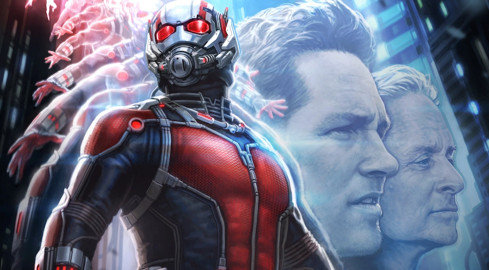

Acesso Restrito // Arquivos de Dados das Indústrias Pym

Nome Verdadeiro: Scott Edward Harris Lang
Profissão Original: Engenheiro Eletrônico (mestre em Engenharia Elétrica).
Resumo Biográfico: Scott não possui superpoderes biológicos ou mutações. Sua capacidade de alterar de tamanho e interagir com insetos vem exclusivamente do uso genial da engenharia reversa e do domínio sobre as revolucionárias Partículas Pym.
Scott Lang era um pai de família desesperado e um mestre da engenharia que acabou preso por cometer um roubo estilo "Robin Hood" para expor uma corporação corrupta.
Após sair da prisão, incapaz de conseguir emprego e precisando de dinheiro para garantir o direito de visitar sua filha, Cassie Lang, ele cedeu à tentação e planejou um último roubo na casa do cientista recluso Hank Pym.
Lá dentro, encontrou o protótipo do traje. Ao testá-lo, descobriu o poder de encolher. O que Scott não sabia é que tudo havia sido uma armação de Hank Pym, que o testou para ver se ele era audacioso e habilidoso o suficiente para herdar o manto do Homem-Formiga e proteger a fórmula secreta contra ameaças militares.
Scott mantém uma residência estável em San Francisco, Califórnia, onde vive perto de sua filha Cassie. É uma típica área urbana de ladeiras, onde ele tenta manter a fachada de um cidadão comum.
Sua verdadeira base de operações técnica é o laboratório de Hank Pym. Graças às partículas de alteração de massa, este enorme complexo científico de múltiplos andares pode ser encolhido até o tamanho de uma mala de viagem de rodinhas e transportado para qualquer lugar do mundo instantaneamente.
Considerado sua "segunda casa" involuntária. Um micro-universo subatômico localizado abaixo do espaço-tempo unconventional, onde as leis da física e do tempo deixam de fazer sentido.
O traje do Homem-Formiga é uma obra-prima da engenharia que isola o corpo do usuário contra os efeitos mortais da mudança de densidade molecular.
Ao contrário de heróis que usam força bruta pura (como o Hulk), o Homem-Formiga é um combatente altamente tático, imprevisível e que usa a física e a distração a seu favor.
Scott altera seu tamanho constantemente no meio de uma sequência de golpes. Ele pode sumir do campo de visão do inimigo no milissegundo em que o adversário tenta desferir um soco e reaparecer instantes depois em tamanho normal desferindo um gancho.